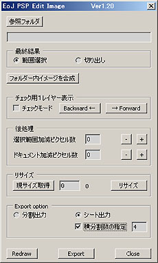

s000192_EoJ_PSP_Edit_Image

機能： フォルダ内のpngもしくはtgaファイルを読み込み最大選択範囲にて切抜きpsdフォーマットにて連番orシートで出力します。
要アクション：
pngフォーマットに対応の為アクションのEoJカテゴリにsel_opacityでレイヤの透明部分の選択>>選択範囲の保存
のアクションを追加してください。
機能説明：
参照フォルダ： 読み込みフォルダ指定
最終結果選択ラジオボタン：
範囲選択 切り出さずに全ファイル通しての最大選択範囲を正方形で選択
切り出し 全ファイル通しての最大選択範囲で切り抜き
フォルダー内イメージを合成： 指定フォルダー内の全tgaファイルを最終結果の選択に基づきレイヤー化
チェック用１レイヤー表示：
チェックモード 複数レイヤーの一枚のみを表示
Backward← 押す毎に上方向のレイヤーを表示
forward→ 押す毎に下方向のレイヤーを表示
後処理：
選択範囲加減ピクセル数 選択範囲を入力数値分＋−します
ドキュメント加減ピクセル数 ドキュメントのサイズを入力数値分＋−します
※それぞれ+−のボタンにて１クリック毎に増減が反映されます
リサイズ：
現サイズ取得 現状のドキュメントのサイズを取得
リサイズ横幅設定 横幅のサイズを入力、縦は相対で反映
リサイズボタン リサイズを実行
Export option：
分割出力 各レイヤーを一枚ずつの連番ファイルで出力
シート出力 各レイヤーを一枚のシートに並べて出力
横分割数の指定 チェックONで横に並べる数の指定が有効になります。
横分割数の指定数 チェックON時にここに横に並べる数を入れてください。
※出力フォルダは上記設定の参照フォルダでフォルダ名を付けて連番時は*****.01.psdスタート
Redraw ボタン： 画面再描画
Export ボタン： Export
optionに基づき出力
Closeボタン： スクリプト終了
使用法：
pngもしくはtgaフォーマットの入っているフォルダを参照フォルダボタンにて選択しその連番のイメージをレイヤー化
及び複数チャンネル化して一個のドキュメントにします。（※フォトショップの制限の為RGBチャンネル以外には
５３個までのチャンネルしか作成出来ません）
ドキュメント化の際にpngもしくはtgaのマスクの最大値で切り出すかそのままの解像度で選択範囲のみ作成するかを
選び、フォルダー内イメージを合成ボタンにて実行します。
ドキュメントが出来たらチェック用1レイヤー表示にて一枚づつのレイヤーを表示し確認する事も出来ます。
その後リサイズにてドキュメントのサイズを変更できます。この際は通常より小さめに変更をかけて貰った方が
いいかと思われます。
後処理として選択範囲の拡縮や切り出したドキュメントの拡縮が出来るのですが、これは最大値で選択、
切り出しを行いますのでテクスチャーぼかしを掛けた際に隣からの影響を受けないように最終的に安全エリアを
確保の意味合いで存在しています。
例えば一枚のキャラが６４×６４を想定されているならばリサイズで６２や６０にしてもらい後処理にて２や４にて
＋して６４×６４のイメージを構成する感じです。
その後Export optionにて連番出力か一枚のシートかを選択しExportボタンにて出力してください。
その際には参照フォルダーの名前をファイル名に付けシート選択時は*****.psdにて連番時には
*****.01.psd〜*****.??.psd として出力されます。
横分割の数を指定しない場合は解像度５１２をpngもしくはtgaの一枚の解像度で割って配置します。
備考：
スクリプトはフォトショップインストールフォルダにコピーして下さい。起動中のコピーは再起動が必要です。
例：C:\Program Files\Adobe\Adobe Photoshop
CS2\プリセット\スクリプト の下。
スクリプトはアクションにボタンとして割り付けられます。
最新のアクセスフォルダを反映する為にc:\ にs000192_EoJ_PSP_Edit_Image_setpath.txt というファイルが
作成されます。